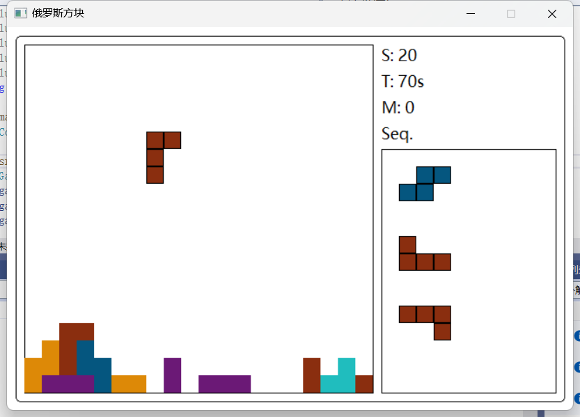
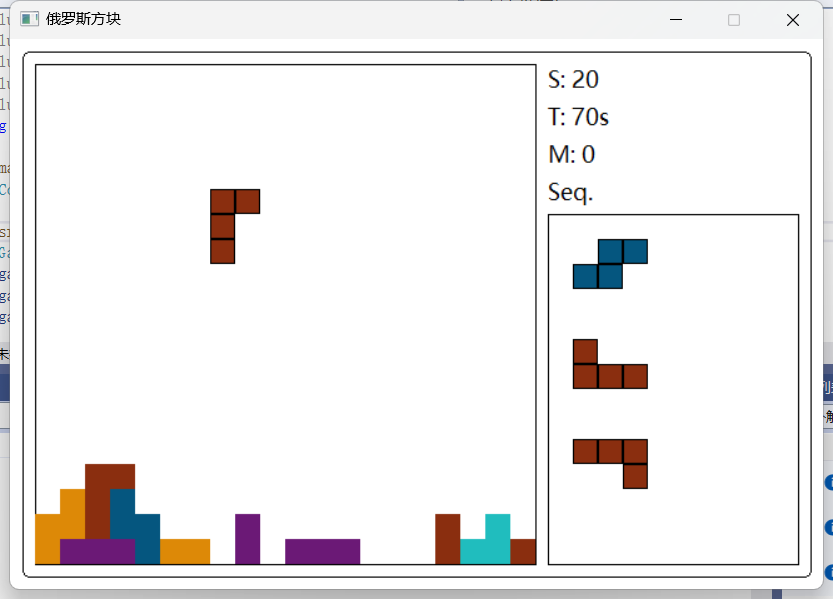

voidBlock::clear(int leftX, int leftY)const{ int x, y, left, top; for (int i = 0; i < 4; i++) { x = getX(i); y = getY(i); left = leftX + BLOCK_SIZE * (m_x + x); top = leftY + BLOCK_SIZE * (m_y + y); clearrectangle(left, top, left + BLOCK_SIZE, top + BLOCK_SIZE); } }
intgetX(int ind)const{ int data = BLOCK_DATA[m_type][m_ind]; // 获取当前方块类型和旋转状态的编码 // 每个坐标由四位表示，且需要跳过前四位（h-1和w-1） int shift = 12 - 4 * ind; // 计算向右移动的位数 return (data >> (shift + 2)) & 0x3; // 提取x坐标（两位） } intgetY(int ind)const{ int data = BLOCK_DATA[m_type][m_ind]; // 获取当前方块类型和旋转状态的编码 int shift = 12 - 4 * ind; // 计算向右移动的位数 return (data >> shift) & 0x3; // 提取y坐标（两位） }
2.draw
1 2 3 4 5 6 7 8 9 10 11 12 13 14 15 16 17 18 19
voidBlock::draw(int leftX, int leftY)const{ // draw current block // 遍历方块的四个小方块 for (int i = 0; i < 4; i++) { // 获取当前小方块的相对坐标 int x = getX(i); int y = getY(i);
// 绘制地图上的所有方块 for (int y = 0; y < MAP_HEIGHT; y++) { for (int x = 0; x < MAP_WIDTH ; x++) { int blockType = getMap(x, y); if (blockType != 0) { // 0 is the empty space // 根据方块类型设置颜色 COLORREF color = Block::COLORS[blockType - 1]; // 0表示空白，而类型从1开始 setfillcolor(color);
// 计算方块在屏幕上的坐标 int startX = leftXY() + x * BLOCK_SIZE; int startY = leftXY() + y * BLOCK_SIZE;
voidGame::clearLine(){ //Rewrite this function, implement the following logic: // If (there are 1 line to clear) // score += 10 // Else if (there are 2 lines to clear) // score += 30 // Else if (there are 3 lines to clear) // score += 50 // Else if (there are 4 lines to clear) // score += 70 // NOTE: When you done this logic, please comment out // the code after "END OF YOUR CODE"
int linesCleared = 0; for (int j = 0; j < MAP_HEIGHT; j++) { if (checkLine(j)) { // 将上一行移至满行 for (int k = j; k > 0; k--) { for (int i = 0; i < MAP_WIDTH; i++) { setMap(i, k, getMap(i, k - 1)); } } // Reset the top line to empty after shift down for (int i = 0; i < MAP_WIDTH; i++) { setMap(i, 0, 0); } linesCleared++; j--; // Recheck the same line index after rows are shifted down } }
// Calculate score based on number of lines cleared switch (linesCleared) { case1: score += 10; break; case2: score += 30; break; case3: score += 50; break; case4: score += 70; break; default: break; // No score increment for no lines or more than 4 lines } }
然后我们来阅读一下addBlkToMap函数
1 2 3 4 5 6 7 8
voidGame::addBlkToMap(){ int bx, by; for (int i = 0; i < 4; i++) { bx = m_curBlk.getX(i); by = m_curBlk.getY(i); setMap(m_curBlk.x() + bx, m_curBlk.y() + by, m_curBlk.type()); } }
int x = MAP_WIDTH + 1;// 这里假设显示在地图右侧的适当位置 int y = rightTxtHeight() / BLOCK_SIZE + 1;// 基于右侧文字高度计算起始高度 for (auto blk : enumerate(m_nextBlks)) blk.item.setPos(x, y + 4 * int(blk.index));//每个方块下移4个单位距离以避免重叠 }
voidGame::drawNextBlks()const{ // Draw all the elements in m_nextBlks int startX = BLOCK_SIZE + rightX(); int startY = rightY() + rightTxtHeight() + BLOCK_SIZE; int verticalSpacing = BLOCK_SIZE * 4; // 假设每个方块垂直间距是4个方块的高度 int index = 0; for (const Block& blk : m_nextBlks) { int blockDrawY = startY + index * verticalSpacing; blk.draw(startX-blk.x()*BLOCK_SIZE, blockDrawY-blk.y()*BLOCK_SIZE); index++; } }
5.writeMaxScore
检查当前分数是否大于已有的最高分数，如是，则更新。
每次都调用write函数来更新配置信息
1 2 3 4 5 6 7 8 9 10 11
voidGame::writeMaxScore(){ //Write max score to file, using class Configure::write // Check if the current game score is higher than the stored maximum score if (score > Configure::getInst()->maxScore()) { // Update the maximum score in the Configure instance Configure::getInst()->setMaxScore(score); }
// Write the updated configuration to the file Configure::getInst()->write(); }
 
